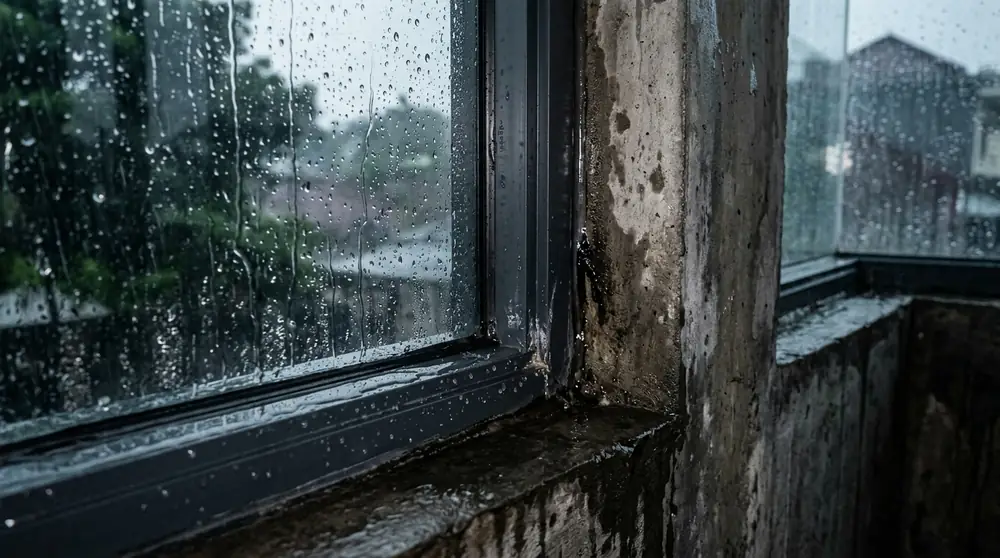
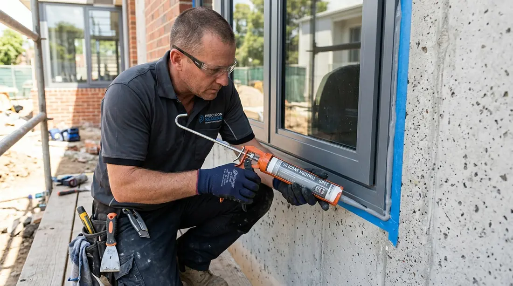

Cara Mengatasi Kusen Aluminium Bocor Saat Hujan Deras Angin di Kepanjen

📌 Ringkasan Inti
Kusen aluminium bocor saat hujan deras di Kepanjen umumnya disebabkan oleh sealant yang sudah retak atau celah pada sambungan kusen dan tembok. Perbaikan dapat dilakukan secara terstruktur dengan mengganti sealant silikon netral secara bertahap.
- Kebocoran kusen aluminium paling sering terjadi pada sambungan antara kusen dan tembok.
- Sealant silikon yang sudah getas atau retak menjadi penyebab utama air hujan merembes masuk ke dalam ruangan.
- Angin kencang saat hujan deras memperbesar tekanan air ke celah mikro kusen.
- Perbaikan terarah dapat dilakukan dengan membersihkan sealant lama lalu mengganti dengan sealant silikon netral baru.
- Pemeriksaan berkala membantu mencegah kebocoran berulang menjelang musim penghujan di Kepanjen.
Bagi warga yang membutuhkan solusi tepat dari jasa kusen aluminium kepanjen, permasalahan rembesan air pada kusen jendela saat musim hujan adalah keluhan yang paling sering dihadapi. Ketika badai hujan disertai tiupan angin kencang melanda wilayah Kepanjen, celah sekecil apa pun pada bingkai aluminium dapat menjadi jalur masuk air yang merusak dinding interior.
Kepanjen sebagai pusat pemerintahan Kabupaten Malang memiliki karakteristik geografis dengan hamparan terbuka yang sering diterpa angin kencang saat hujan lebat. Kondisi alam ini memberi tekanan hidrostatis ekstra pada bidang jendela kaca dan sambungan kusen luar bangunan rumah maupun ruko.
Apa Itu Kebocoran Kusen Aluminium Saat Hujan Deras
Kebocoran kusen aluminium adalah kondisi merembesnya air hujan dari luar gedung ke dalam ruangan melalui celah sambungan kusen, baik pertemuan antara rangka aluminium dengan plesteran tembok bata, celah miter sambungan sudut 45 derajat, maupun sela antara kaca mati dengan karet penjepit.
Tetesan air yang merembes biasanya menetes ke kusen bawah, merambat ke lantai, hingga meninggalkan noda bercak basah pada cat dinding interior. Jika dibiarkan berbulan-bulan tanpa tindakan pembenahan, kelembapan kronis tersebut dapat memicu tumbuhnya jamur hitam (mold) serta merusak wallpaper dan perabotan kayu di sekitarnya.

Kenapa Kusen Aluminium Bisa Bocor Saat Hujan Deras di Kepanjen
Material aluminium murni sesungguhnya 100% kedap air dan tidak berpori. Oleh sebab itu, sumber kebocoran selalu terletak pada kelemahan perimeter dan sambungan aksesoris. Di kawasan Kepanjen, faktor-faktor pemicunya mencakup:
- Sealant Lama Mengeras & Retak (Degradasi UV): Paparan panas terik matahari bergantian dengan hujan dingin membuat lem sealant silikon mengering, menyusut, dan kehilangan elastisitasnya sehingga membentuk celah mikroskopis.
- Tekanan Angin Kencang (Wind-Driven Rain): Hujan badai di kawasan terbuka Kepanjen mendorong butiran air berkecepatan tinggi menembus sela-sela profil yang tidak bersekat rapat.
- Lubang Pembuangan Air (Weep Holes) Tersumbat: Debu, lumut, atau bangkai serangga menyumbat lubang drainase kecil di bagian bawah kusen jendela geser atau casement, sehingga genangan air meluap ke dalam kusen.
- Kurangnya Backer Rod pada Celah Lebar: Sambungan celah kusen-tembok selebar lebih dari 6 mm tanpa busa penyangga (backer rod) menyebabkan lapisan silikon mudah pecah di bagian tengah saat terjadi pergerakan termal bangunan.
Layanan Re-sealing & Perbaikan Kusen Aluminium Kepanjen
Solusi tuntas rembesan air hujan dan kusen bocor di Kepanjen Malang. Teknisi ahli kami mengganti sealant getas dengan formula silikon netral anti-UV berkualitas tinggi bergaransi resmi pengerjaan.
Langkah Praktis Mengatasi Kebocoran Kusen Aluminium
Mengatasi kebocoran kusen aluminium secara efektif memerlukan penanganan terstruktur dari pembersihan hingga teknik pengisian sealant yang benar. Ikuti langkah kerja bertahap berikut:
| Langkah Kerja | Uraian Prosedur Standar | Peralatan yang Diperlukan |
|---|---|---|
| 1. Identifikasi Titik Rembes | Tandai seluruh area rembesan air pada saat hujan lebat atau simulasikan penyiraman selang air dari arah luar. | Kapur tulis / spidol kertas, senter inspeksi. |
| 2. Pengerokan Sealant Lama | Kupas habis sealant yang retak atau getas sampai bersih ke dasar celah kusen. Jangan menimpa di atas lapisan lama. | Cutter tajam, kape scraper, sikat kawat kuningan halus. |
| 3. Pembersihan & Pengeringan | Bersihkan debu dengan kuas dan lap menggunakan alkohol isopropil (IPA). Pastikan bidang benar-benar kering sebelum diisi. | Lap microfiber, alkohol IPA / tiner A, blower mini. |
| 4. Pemasangan Masking Tape | Tempelkan isolasi kertas pelindung pada tepian aluminium dan tembok untuk memastikan garis tarikan sealant rapi. | Masking tape kertas 1 inci. |
| 5. Injeksi Sealant Netral & Finishing | Tembakkan sealant silikon netral secara merata dengan sudut 45 derajat, lalu ratakan dengan scraper karet dan lepaskan masking tape. | Caulking gun, sealant silikon netral, kape silikon. |
Sealant Jenis Apa yang Tepat untuk Kusen Aluminium
Banyak kekeliruan terjadi karena pengguna memilih sembarang lem kaca yang dijual murah. Pemilihan jenis sealant sangat menentukan ketahanan kusen terhadap korosi dan iklim tropis Kepanjen:
| Jenis Sealant | Karakteristik & Sifat Kimia | Kecocokan untuk Aluminium |
|---|---|---|
| Sealant Silikon Netral (Neutral Cure) | Tidak berbau menyengat, tidak korosif terhadap logam, memiliki elastisitas tinggi (elongation > 350%), tahan paparan radiasi sinar UV ekstrem. | Sangat Direkomendasikan Aman untuk profil anodized & powder coating. |
| Sealant Silikon Asam (Acetic Cure) | Mengeluarkan aroma cuka tajam saat proses pengeringan, mengering relatif cepat, namun melepaskan uap asam asetat korosif. | Kurang Disarankan Berisiko memicu korosi dan bercak noda pada logam aluminium. |
| Polyurethane (PU) Sealant | Daya rekat sangat kuat pada beton dan batu bata, dapat dicat ulang, namun sensitif terhadap sinar matahari langsung jika tanpa lapisan cat. | Cocok untuk Precast Bagus untuk sambungan opening dinding luar. |
"Di wilayah Kepanjen yang memiliki intensitas angin dan curah hujan tinggi, rembesan air paling banyak terjadi akibat sealant silikon asam yang getas dalam 2 tahun. Penggantian wajib memakai sealant silikon netral grade konstruksi setelah permukaan sambungan dikerok bersih dan kering sempurna."
Kesalahan Umum Saat Memperbaiki Kebocoran Kusen Aluminium
Agar perbaikan yang Anda lakukan berumur panjang dan tidak perlu diulang setiap musim hujan, hindari beberapa kekeliruan fatal yang sering dijumpai di lapangan:
- Menimpa Lem Baru di Atas Sealant Lama: Lapisan sealant baru tidak akan mengikat kuat pada silikon lama yang berdebu dan berlumut. Dalam beberapa minggu lapisan atas akan terkelupas.
- Mengaplikasikan Lem pada Permukaan Masih Lembap: Kelembapan yang terperangkap di bawah silikon memicu gelembung udara mikro dan membuat daya rekat gagal total.
- Menutup Lubang Weep Hole Tanpa Sengaja: Saat menyuntikkan silikon di bagian bawah jendela geser, jangan sampai menutupi celah pembuangan air pembuangan profil.
- Menunda Penanganan Rembesan Ringan: Membiarkan rembesan air kecil masuk ke pori-pori dinding bata dapat mengakibatkan semen dinding menjadi lunak dan berjamur di belakang lemari pakaian.
Dengan pemeliharaan rutin dan penggantian material penyekat yang bermutu tinggi, jendela dan pintu aluminium di hunian Anda di Kepanjen akan senantiasa kedap air, nyaman, dan kokoh melindungi keluarga dari cuaca ekstrem sepanjang tahun.
Pertanyaan Seputar Perbaikan Kusen Bocor di Kepanjen
Bisa, terutama untuk kebocoran ringan pada sambungan kusen dan plesteran dinding luar, asalkan mengikuti langkah pembersihan sisa sealant lama dan aplikasi sealant silikon netral secara merata dengan benar.
Daya tahan sealant silikon netral berkualitas tinggi umumnya bertahan antara 3 hingga 5 tahun tergantung paparan terik sinar UV dan kelembapan cuaca. Pemeriksaan rutin tahunan tetap dianjurkan.
Tidak semua aman. Sealant silikon netral (neutral cure) sangat disarankan untuk logam aluminium karena tidak korosif. Hindari silikon asam (acetic cure) karena uap asam asetatnya berisiko mengikis permukaan lapisan anodized atau powder coating aluminium.